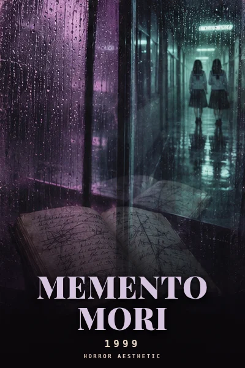

Мементо мориMemento Mori (1999)
Режиссёр: Ким Тэ-ён, Мин Гю-дон · Корейский хоррор, Призраки, ШколаDirector: Kim Tae-yong, Min Kyu-dong · Korean horror, Ghosts, School
⚠ Тема самоубийстваSuicide-related theme
Девочка находит общий дневник двух школьниц и входит в историю, которой не должна была касаться.A girl finds a shared diary of two schoolgirls and steps into a story she was never meant to touch.
В женской школе ученица находит дневник, который вели две подруги. В нём их тайна: близость, которую нельзя показывать, и то, чем всё закончилось. Теперь по школе бродит их история, и она не отпускает.
Фильм вышел через год после «Шёпота в коридорах» и стал второй частью серии, но связь с ним лишь в месте действия. Здесь меньше страха и больше тоски: сюжет почти любовный, хоррор остаётся тенью.
Режиссёры снимают коридоры, классные комнаты и лестницы как хрупкое пространство, где девочки учатся скрывать себя. Каждая сцена держится на взгляде и паузе.
Для зрителей, которым нужен не шок, а тихая грусть с мистическим привкусом. Хорошая пара к «Шёпоту в коридорах» и «Истории двух сестёр».
At a girls' school a student finds a diary kept by two friends. In it is their secret: a closeness that cannot be shown, and how it ended. Now their story wanders the school, and it will not let go.
The film came out a year after Whispering Corridors as the second part of the series, though the link is only the setting. There is less fear and more longing: the plot is almost romantic, and the horror stays a shadow.
The directors shoot corridors, classrooms and stairwells as a fragile space where girls learn to hide themselves. Each scene rests on a look and a pause.
For viewers who want not shock but quiet sorrow with a mystical aftertaste. A good pair for Whispering Corridors and A Tale of Two Sisters.